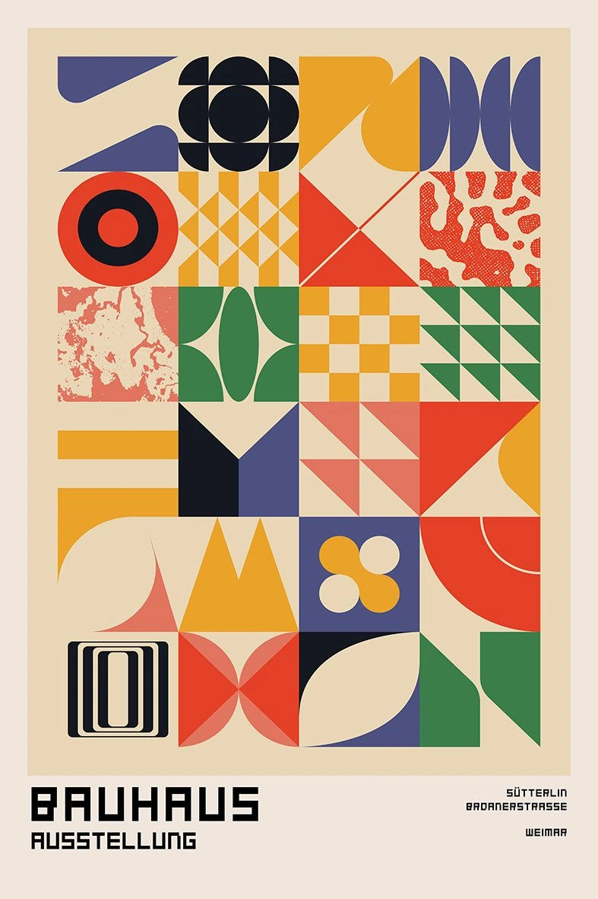
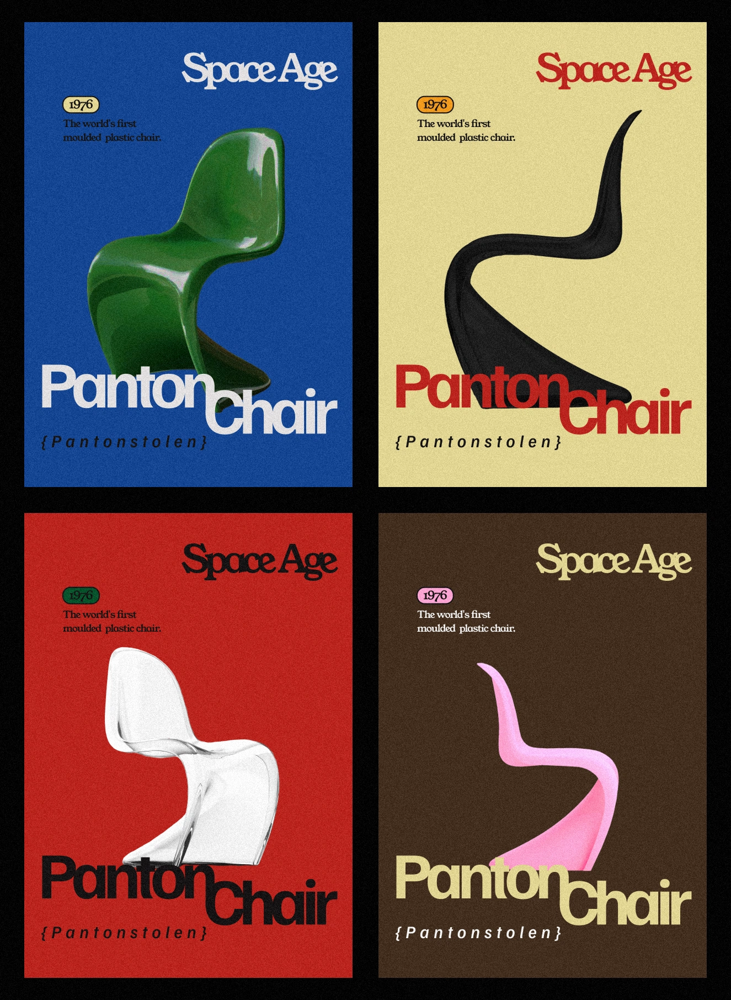
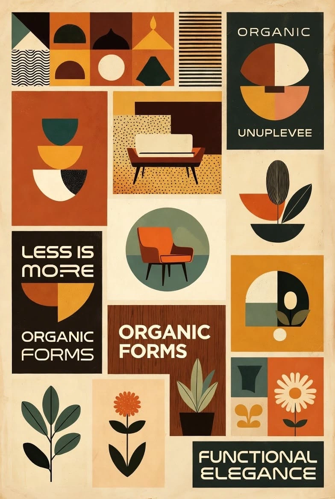
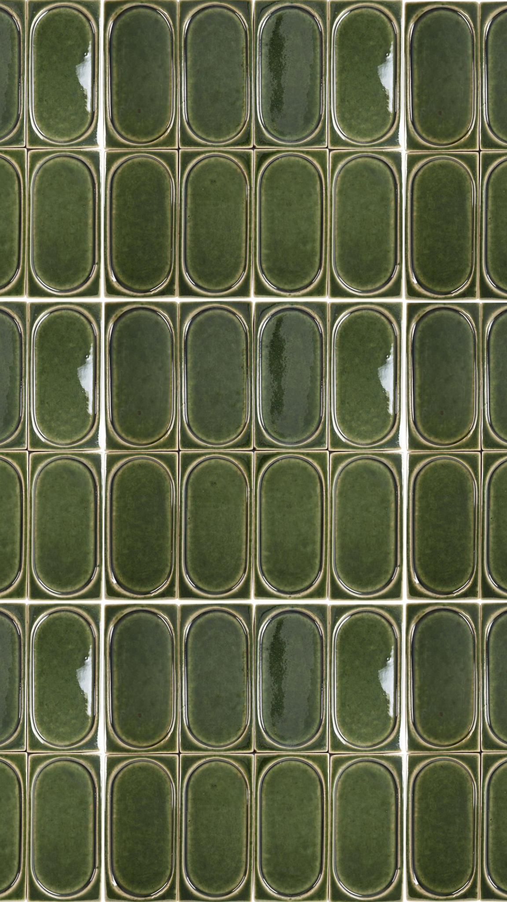
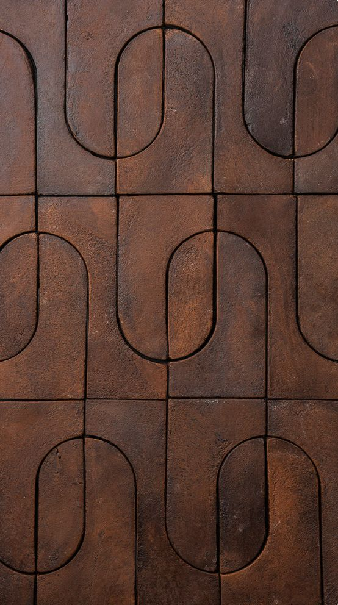
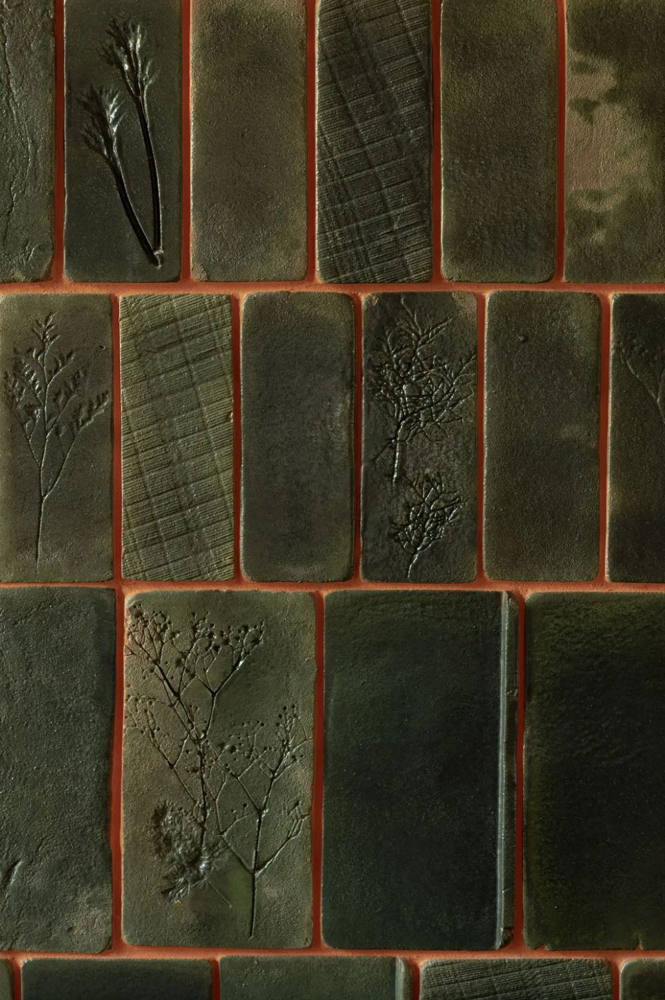

Direction A kept, pass 2: the LUI-178 tells are gone (colored italic keyword, mono kicker above the heading, footer title repeating the heading, card radius on the poster). Each code keeps its own colors from the ambiance: brass and olive for 404, the red family for 500. "Before" shows the pass 1 copy.
Global error replaces the root layout, so the theme provider and the visitor's choice are gone: the frames are pinned to ambiance 03 whatever the switch says. Copy is static English.
The code is built from the same shapes as the bento's Bauhaus art (half discs, bars, a dividing rule), with a printed footer like the exhibition poster. Each code is a poster of the same series in another colorway, as the Panton posters do. The footer carries the requested path (404) or the error reference (500), so the decoration also does a job.



A glazed tile wall with the capsule relief of the green bathroom. On 404 one tile is gone and the combed adhesive shows where it was. On 500 a tile is cracked. The idea changes with the code, the color follows it: olive tiles for 404, the ambiance's red tiles for 500.


